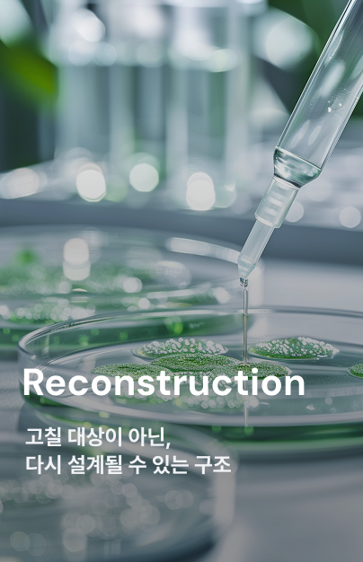
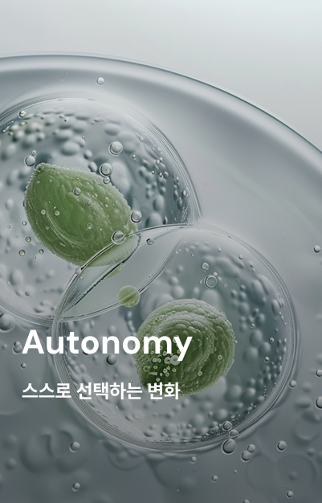

Subvion의 신념
윤리적 신념을 바탕으로 새로운 삶의 기회를 제공하는 혁신을 만들고자 합니다



생물학적 복제 기술과 유전체 기반 자아 최적화 솔루션을 통해, 건강한 새로운 육체를 만들어냅니다. 불치병, 유전적 한계 등 어떠한 생명의 문제도 더 이상 죽음으로 이어지지 않고 새로운 삶을 얻을 수 있습니다.
윤리적 신념을 바탕으로 새로운 삶의 기회를 제공하는 혁신을 만들고자 합니다
윤리적 신념을 바탕으로 새로운 삶의 기회를 제공하는 혁신을 만들고자 합니다
개개인의 유전체, 호르몬, 근육 반응, 피부 특성을 고해상도로 스캔 후 분석합니다. 이후 언어패턴 분석을 위해 녹화실로 들어가 인터뷰를 진행합니다.
수집된 데이터를 기반으로 프로토타입을 생성합니다. 환자의 관점과 가장 이상적인 자아를 함께 고려합니다.
설계된 프로토타입을 바탕으로 신체를 목적에 맞게 최적화합니다. 기존의 문제를 해결하고 완전히 새로운 삶의 방향을 제공합니다.
제작된 육체는 활성화되어 실험/연구에 들어갑니다. 이후 완료된 대상은 목적에 따라 종료/해제됩니다.